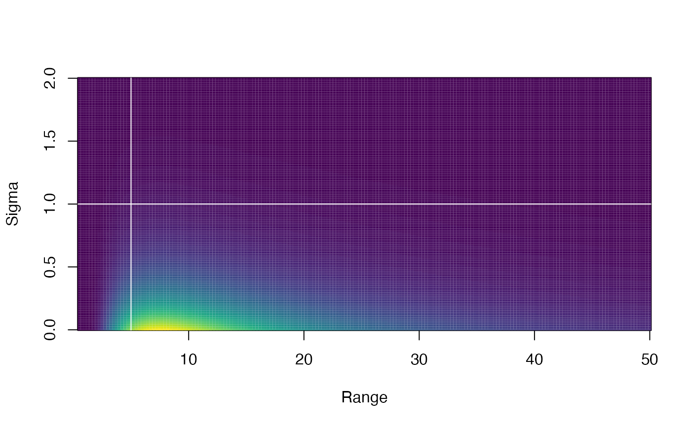

![[Experimental]](figures/lifecycle-experimental.svg)
Optional priors/penalties on model parameters. This results in penalized
likelihood within TMB or can be used as priors if the model is passed to
tmbstan (see the example in extract_mcmc()).
Note that Jacobian adjustments are only made if bayesian = TRUE when the
sdmTMB() model is fit. I.e., the final model will be fit with tmbstan
and priors are specified then bayesian should be set to TRUE. Otherwise,
leave bayesian = FALSE.
pc_matern() is the Penalized Complexity prior for the Matern
covariance function.
sdmTMBpriors(
matern_s = pc_matern(range_gt = NA, sigma_lt = NA),
matern_st = pc_matern(range_gt = NA, sigma_lt = NA),
phi = halfnormal(NA, NA),
ar1_rho = normal(NA, NA),
tweedie_p = normal(NA, NA),
b = normal(NA, NA)
)
normal(location = 0, scale = 1)
halfnormal(location = 0, scale = 1)
mvnormal(location = 0, scale = diag(length(location)))
pc_matern(range_gt, sigma_lt, range_prob = 0.05, sigma_prob = 0.05)Arguments
- matern_s
A PC (Penalized Complexity) prior (
pc_matern()) on the spatial random field Matern parameters.- matern_st
Same as
matern_sbut for the spatiotemporal random field. Note that you will likely want to setshare_fields = FALSEif you choose to set both a spatial and spatiotemporal Matern PC prior since they both include a prior on the spatial range parameter.- phi
A
halfnormal()prior for the dispersion parameter in the observation distribution.- ar1_rho
A
normal()prior for the AR1 random field parameter. Note the parameter has support-1 < ar1_rho < 1.- tweedie_p
A
normal()prior for the Tweedie power parameter. Note the parameter has support1 < tweedie_p < 2so choose a mean appropriately.- b
normal()priors for the main population-level 'beta' effects.- location
Location parameter(s).
- scale
Scale parameter. For
normal()/halfnormal(): standard deviation(s). Formvnormal(): variance-covariance matrix.- range_gt
A value one expects the spatial or spatiotemporal range is greater than with
1 - range_probprobability.- sigma_lt
A value one expects the spatial or spatiotemporal marginal standard deviation (
sigma_Oorsigma_Einternally) is less than with1 - sigma_probprobability.- range_prob
Probability. See description for
range_gt.- sigma_prob
Probability. See description for
sigma_lt.
Value
A named list with values for the specified priors.
Details
Meant to be passed to the priors argument in sdmTMB().
normal() and halfnormal() define normal and half-normal priors that, at
this point, must have a location (mean) parameter of 0. halfnormal() is the
same as normal() but can be used to make the syntax clearer. It is intended
to be used for parameters that have support > 0.
See https://arxiv.org/abs/1503.00256 for a description of the
PC prior for Gaussian random fields. Quoting the discussion (and substituting
the argument names in pc_matern()):
"In the simulation study we observe good coverage of the equal-tailed 95%
credible intervals when the prior satisfies P(sigma > sigma_lt) = 0.05 and
P(range < range_gt) = 0.05, where sigma_lt is between 2.5 to 40 times
the true marginal standard deviation and range_gt is between 1/10 and 1/2.5
of the true range." Also see INLA::inla.spde2.pcmatern().
Keep in mind that the range is dependent on the units and scale of the coordinate system. In practice, you may choose to try fitting the model without a PC prior and then constraining the model from there. A better option would be to simulate from a model with a given range and sigma to choose reasonable values for the system or base the prior on knowledge from a model fit to a similar system but with more spatial information in the data.
References
Fuglstad, G.-A., Simpson, D., Lindgren, F., and Rue, H. (2016) Constructing Priors that Penalize the Complexity of Gaussian Random Fields. arXiv:1503.00256
Simpson, D., Rue, H., Martins, T., Riebler, A., and Sørbye, S. (2015) Penalising model component complexity: A principled, practical approach to constructing priors. arXiv:1403.4630
See also
Examples
normal(0, 1)
#> [,1] [,2]
#> [1,] 0 1
#> attr(,"dist")
#> [1] "normal"
halfnormal(0, 1)
#> [,1] [,2]
#> [1,] 0 1
#> attr(,"dist")
#> [1] "normal"
mvnormal(c(0, 0))
#> [,1] [,2] [,3]
#> [1,] 0 1 0
#> [2,] 0 0 1
#> attr(,"dist")
#> [1] "mvnormal"
pc_matern(range_gt = 5, sigma_lt = 1)
#> [1] 5.00 1.00 0.05 0.05
#> attr(,"dist")
#> [1] "pc_matern"
plot_pc_matern(range_gt = 5, sigma_lt = 1)

if (inla_installed()) {
d <- subset(pcod, year > 2011)
pcod_spde <- make_mesh(d, c("X", "Y"), cutoff = 30)
# - no priors on population-level effects (`b`)
# - halfnormal(0, 10) prior on dispersion parameter `phi`
# - Matern PC priors on spatial `matern_s` and spatiotemporal
# `matern_st` random field parameters
m <- sdmTMB(density ~ s(depth, k = 3),
data = d, mesh = pcod_spde, family = tweedie(),
share_range = FALSE, time = "year",
priors = sdmTMBpriors(
phi = halfnormal(0, 10),
matern_s = pc_matern(range_gt = 5, sigma_lt = 1),
matern_st = pc_matern(range_gt = 5, sigma_lt = 1)
)
)
# - no prior on intercept
# - normal(0, 1) prior on depth coefficient
# - no prior on the dispersion parameter `phi`
# - Matern PC prior
m <- sdmTMB(density ~ depth_scaled,
data = d, mesh = pcod_spde, family = tweedie(),
spatiotemporal = "off",
priors = sdmTMBpriors(
b = normal(c(NA, 0), c(NA, 1)),
matern_s = pc_matern(range_gt = 5, sigma_lt = 1)
)
)
# You get a prior, you get a prior, you get a prior!
# (except on the annual means; see the `NA`s)
m <- sdmTMB(density ~ 0 + depth_scaled + depth_scaled2 + as.factor(year),
data = d, time = "year", mesh = pcod_spde, family = tweedie(link = "log"),
share_range = FALSE, spatiotemporal = "AR1",
priors = sdmTMBpriors(
b = normal(c(0, 0, NA, NA, NA), c(2, 2, NA, NA, NA)),
phi = halfnormal(0, 10),
tweedie_p = normal(1.5, 2),
ar1_rho = normal(0, 1),
matern_s = pc_matern(range_gt = 5, sigma_lt = 1),
matern_st = pc_matern(range_gt = 5, sigma_lt = 1))
)
}